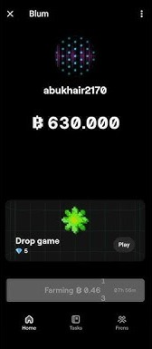

Blum is a Telegram mining bot and is considered one of the most legitimate mining bots on the platform. Users can mine Blum coins by starting the bot every 8 hours. Simply start the bot and collect your previous coins. Additionally, users can earn coins by completing simple tasks such as subscribing to channels, following social media accounts, and referring friends. Blum features a user-friendly interface, making it one of the easiest bots on Telegram for mining coins. Many users are optimistic about the launch of Blum coin.
Users can earn more coins by playing games. Games can only be played using tickets, which can be obtained by maintaining a daily login streak on the bot. Most users can earn between 130 to 180 coins per game, in addition to the coins they can collect every 8 hours. Completing simple tasks also allows users to accumulate a significant amount of coins.